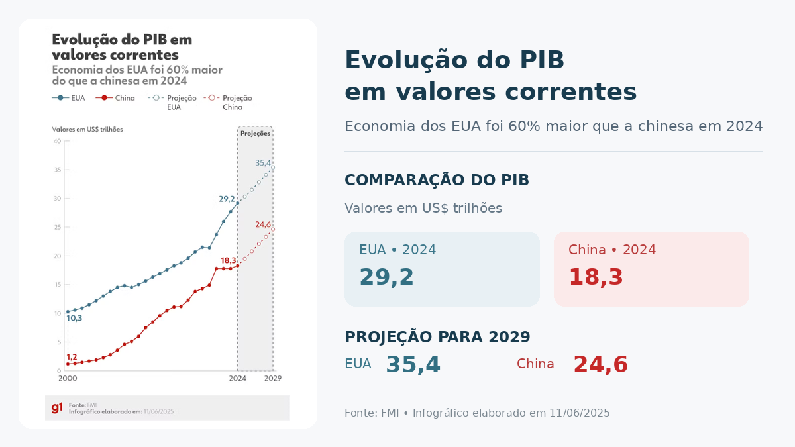
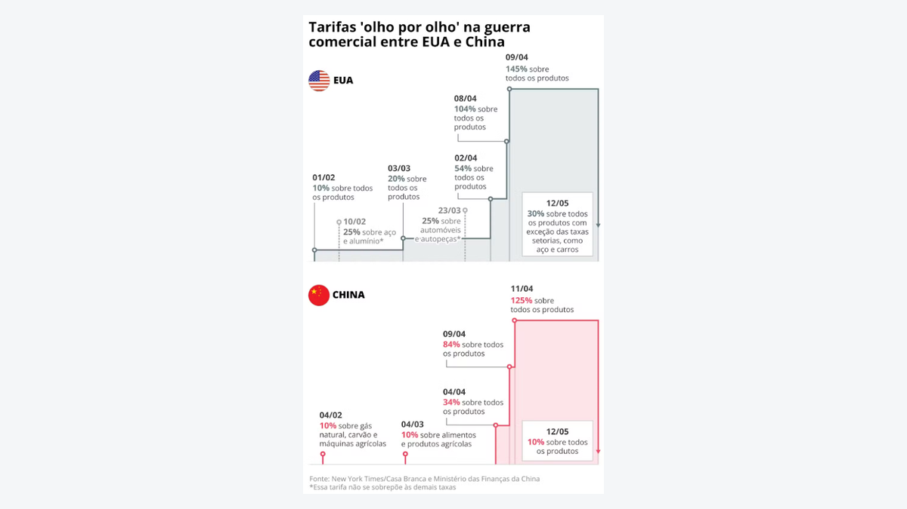

ESTADOS UNIDOS x CHINA
Clique nos botões abaixo para obter mais informações
Onde aconteceu o conflito

O embate geopolítico entre os Estados Unidos da América e a República Popular da China possui uma dimensão global, mas o seu epicentro geográfico está na região do Indo-Pacífico. A disputa envolve duas potências com projeção econômica, militar e tecnológica, e se manifesta por meio de pressões diplomáticas, sanções comerciais, presença militar e disputa por tecnologia, recursos e rotas marítimas.
- Países envolvidos: EUA e RPC.
- Capitais: Washington, D.C. (EUA) e Pequim (China).
- Continente: América do Norte (EUA) e Ásia (China).
- Fronteiras: Os EUA são banhados pelos oceanos Atlântico e Pacífico e fazem fronteira terrestre com Canadá e México. A China está no Leste Asiático, possui a maior fronteira terrestre contínua do planeta, delimitada por 14 países, e uma extensa costa voltada para o Oceano Pacífico, incluindo mares marginais como o Mar do Japão, o Mar Amarelo e o Mar da China Oriental.
- Localização geográfica: Os EUA ocupam o Hemisfério Ocidental, enquanto a China situa-se no Hemisfério Oriental. Os pontos de atrito ocorrem a poucas milhas do litoral chinês e em bases militares dos EUA em países aliados, como Japão, Coreia do Sul, Filipinas e Guam.
- Recursos naturais existentes: Os EUA destacam-se pela energia de petróleo e gás de xisto, além de terras aráveis, madeira, potássio e minerais. A China detém um importante controle sobre terras raras, carvão, minério de ferro, bauxita, lítio e potencial hidrelétrico.
- Importância estratégica da região: O Indo-Pacífico concentra rotas marítimas essenciais para a economia mundial. Pelo Mar da China Meridional passam grandes fluxos de petróleo, gás e mercadorias, e a Ilha de Taiwan é fundamental para a produção de semicondutores avançados, que são essenciais para a tecnologia, a indústria militar e a economia digital global. Enquanto a China impulsionada por seu gigantismo industrial, pelo controle de cadeias produtivas e pela Iniciativa Cinturão e Rota, a China expande sua influência econômica e capacidade militar para garantir o acesso a recursos globais e desafiar a hegemonia ocidental.
Como surgiu o conflito

A relação entre Washington e Pequim passou por profundas transformações nas últimas décadas. Durante a Guerra Fria, após anos de hostilidade, os dois países ensaiaram uma aproximação pragmática na década de 1970 para conter a União Soviética. Esse movimento culminou na integração da China ao sistema capitalista mundial e em sua entrada na Organização Mundial do Comércio (OMC) em 2001. No entanto, a transição da China de fornecedora de mão de obra barata para potência tecnológica e industrial de primeira grandeza transformou a integração econômica em uma competição sistêmica pela hegemonia internacional.
Contexto histórico e fatores determinantes: A disputa cresce em função da rivalidade entre o modelo ocidental de democracia liberal capitalista e o capitalismo de Estado do Partido Comunista Chinês (PCC). O confronto também se fortalece pela disputa por influência regional, tecnologia, cadeias produtivas e controle de rotas comerciais e estratégicas.
- Disputas políticas: Confronto entre a democracia liberal capitalista ocidental (EUA) e o modelo autoritário de capitalismo de Estado sob o comando do PCC. Há divergências sobre o status de soberania de Taiwan, questões de direitos humanos e a ordem internacional.
- Fatores econômicos: Destacam-se o déficit comercial dos EUA em relação à China, acusações de roubo de propriedade intelectual, transferência forçada de tecnologia, subsídios estatais e controle das cadeias globais de produção e inovação.
- Fatores religiosos: Não são a causa central do conflito, mas funcionam como ponto de fricção diplomática, especialmente em relação a denúncias de violações contra minorias muçulmanas uigures em Xinjiang e budistas no Tibete.
- Fatores étnicos: Há crescimento do nacionalismo em ambos os países e controvérsias diplomáticas ligadas a minorias étnicas, a identidade taiwanesa e a autonomia de regiões interioranas da China.
Linha do tempo:
- 1949: Revolução Chinesa; vitória do Partido Comunista Chinês (PCC) e fundação da República Popular da China (RPC). As forças nacionalistas recuam para Taiwan.
- 1972: Visita histórica de Richard Nixon a Pequim, inaugurando uma diplomacia pragmática entre os dois países.
- 1979: Normalização diplomática e aprovação do Taiwan Relations Act, mantendo apoio militar e diplomático a Taiwan.
- 2001: Entrada da China na Organização Mundial do Comércio (OMC), acelerando seu crescimento econômico e industrial.
- 2011: Estratégia do “Pivot to Asia”, com redirecionamento da política externa e militar dos EUA para o Indo-Pacífico.
- 2013: Lançamento da Iniciativa Belt and Road e início da construção de ilhas artificiais no Mar da China Meridional.
- 2018: Eclosão da guerra comercial, com tarifas impostas pelos EUA e retaliações da China.
- 2022 a 2026: Guerra dos chips, sanções tecnológicas e intensificação de exercícios militares chineses ao redor de Taiwan.
Quem participa

O conflito envolve diretamente o Governo Federal dos EUA e o Governo da República Popular da China (RPC), liderado pelo Partido Comunista Chinês (PCC). Como ator central da disputa geopolítica e territorial, participa também o Governo de Taiwan, que busca preservar sua autonomia política e seu sistema democrático.
- Governos envolvidos: Estados Unidos, China e Taiwan.
- Grupos armados: As forças atuantes são essencialmente estatais e regulares. Pelo lado norte-americano, destacam-se as Forças Armadas dos EUA, incluindo o Comando do Indo-Pacífico e a 7ª Frota Naval. Pelo lado chinês, atua o Exército de Libertação Popular (ELP), com destaque para a Marinha e a Força de Foguetes Estratégicos.
- Organizações internacionais: Organização das Nações Unidas (ONU), Organização Mundial do Comércio (OMC), Fundo Monetário Internacional (FMI), G20 e APEC.
- Potências e blocos estrangeiros: AUKUS, QUAD, União Europeia, Coreia do Sul, Filipinas, Rússia, Irã, Coreia do Norte, BRICS e Organização para Cooperação de Xangai (OCS).
Quais interesses estão envolvidos

- Petróleo e gás natural: Ambos os países buscam garantir o controle das rotas marítimas e o acesso às reservas energéticas do Indo-Pacífico.
- Minérios: A disputa também envolve o acesso a recursos críticos para a indústria tecnológica e militar, como terras raras, lítio, cobalto, níquel, gálio e cobre.
- Água: O planalto tibetano e os rios que atravessam o Sudeste Asiático têm importância estratégica para abastecimento, agricultura e influência regional.
- Rotas comerciais: A China busca ampliar sua presença em rotas marítimas e terrestres, enquanto os EUA atuam para garantir a livre navegação internacional e o acesso a mercados estratégicos.
- Territórios disputados: Ilha de Taiwan, arquipélagos Spratly e Paracel e Ilhas Senkaku/Diaoyu, além de áreas de projeção naval e aérea no Pacífico.
- Influência internacional: Há disputa por liderança tecnológica, hegemonia financeira, soberania digital, normas comerciais e capacidade de reorganizar a ordem internacional.
Quais são os impactos

A rivalidade sino-americana constitui uma Guerra Fria tecnológica e geopolítica, sem registro de confrontos militares diretos entre as Forças Armadas dos dois países. Mesmo sem guerra aberta, o conflito afeta o sistema financeiro, a indústria, a tecnologia, a diplomacia e a percepção de segurança de vários países. Em regiões estratégicas como o Sudeste Asiático e o Estreito de Taiwan, a tensão causa incerteza econômica e militar.
- Mortos, feridos, refugiados e deslocados internos: Não há registros diretos de mortos e feridos em combates diretos entre os dois países, mas há impactos indiretos em populações de regiões tensionadas, além de denúncias sobre deslocamentos forçados e violações de direitos humanos em áreas contestadas.
- Impactos econômicos: Reorganização das cadeias produtivas, tarifas protecionistas, sanções tecnológicas, pressão sobre o comércio internacional e maior volatilidade nos mercados globais.
- Impactos sociais: Aumento do nacionalismo, xenofobia, restrições a intercâmbios acadêmicos e diplomáticos, bem como tensão na população de Taiwan, Hong Kong e em países do Sudeste Asiático.
- Impactos ambientais: Construção militar em áreas marítimas, danos aos ecossistemas marinhos e recifes de corais no Mar da China Meridional, além de dificuldades para cooperação climática internacional.
Mapa Sobre o Conflito

🔍 EXPLICAÇÃO SOBRE:
O mapa acima, aborda os conflitos dos Estados Unidos contra a China, mostrando a rivalidade entre os dois países. Na região asiática e no oceano pacifico, podendo observar a distribuição das bases militares americanas, os países aliados e as linhas estratégicas de ilhas. Essas posições são importantes porque permitem aos Estados Unidos manter sua influência militar e estratégica na região, enquanto a China busca ampliar seu poder e sua influência.
Apresentando as bases militares dos Estados Unidos, com os locais navais e instalações militares, como Japão, Coreia do Sul, Guam e Filipinas. Mostra três linhas estratégicas de ilhas utilizadas para representar áreas de contenção e influência militar no Oceano Pacífico.
Gráficos Sobre o Conflito


Mapa Sobre o Conflito
O vídeo explica sobre a Guerra Comercial entre Estados Unidos e China, abordada em nosso trabalho.
Referências Utilizadas no Trabalho
Aqui colocamos alguns sites que usamos como fontes para todos os assustos que abordamos em nosso trabalho.
- China x EUA: o que provoca a tensão entre eles? - Brasil Escola
- Guerra Comercial entre EUA e China: causas, consequências e impactos no Brasil - Planetageo
- Como a Guerra afeta os outros países do mundo? - ChatGPT
- Mar do Sul da China: entenda as disputas e a importância estratégica - Quero Bolsa
- China dá mais dois meses de trégua aos EUA na disputa por terras raras - Exame.
- China e EUA estão reorganizando a economia global. Onde o Brasil entra nessa história? - SeuDinheiro
- Estados Unidos fortalecem aliança com Japão, Índia e Austrália para conter avanço da China no Indo-Pacífico - El País
- How the rivalry between the US and China began, fueled by Trump's trade war - BBC News Brazil (documento em inglês)
- EUA e China: entenda a guerra comercial! - Politize
- O que guerra comercial entre EUA e China significa para o mundo - BBC News Brasil